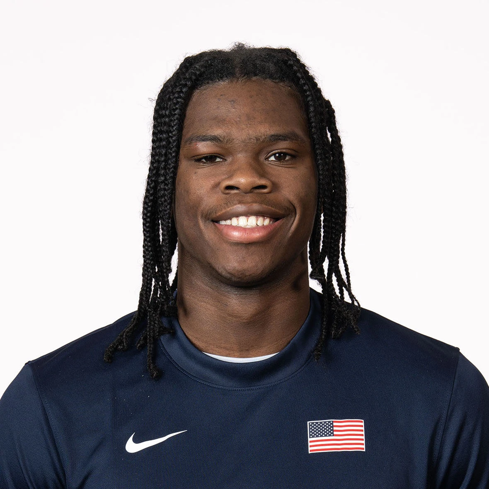

2027 NBA Draft · Preseason Report · Jul 5, 2026
Jordan Smith Jr.
Preseason scouting notes ahead of Arkansas's 2026-27 season.

Draft Projection
NBA Role Projection
Stats
No college minutes logged yet — this section fills in once the season tips off.
Info
School: Arkansas | Class: FR | Position: PG/SG | Height: 6'2" | Weight: 195 | Wingspan: 6'8"
Physical
He has an impressive physical profile for a 6'2" guard, combining a strong frame with elite explosiveness. He grades around a 9/10 vertically and an 8/10 laterally, giving him outstanding burst, agility, and change-of-direction ability. He already looks physically ready for the college level.
Offense
His offensive game is built around the mid-range and high-post areas. He is comfortable creating space for pull-ups and fadeaways, which have become his go-to scoring moves. He can knock down catch-and-shoot and off-the-dribble threes, but he doesn't take many and has yet to become a consistently efficient perimeter shooter.
As a playmaker, he keeps things simple but effective. He does a good job drawing defenders before making dump-off passes or finding open teammates, though he is not yet a high-level creator.
The biggest concern is his shot profile. For a 6'2" guard, he relies heavily on contested mid-range jumpers and often attacks bigger defenders looking to finish through contact. That approach will become much tougher against longer, stronger athletes. His shooting mechanics, both from mid-range and three, also leave room for improvement.
Defense
He possesses all the physical tools to become a high-level perimeter defender. His strength, athleticism, and lateral quickness give him significant defensive upside. The biggest question is consistency and effort. If he fully embraces the defensive end, he has the potential to become an elite two-way guard.
Outlook
His physical profile and downhill explosiveness resemble Scoot Henderson coming out of high school, though he is not at the same level as a prospect. His long-term NBA ceiling will depend on his perimeter shooting, shot selection, and ability to become a more efficient scorer against set defenses.